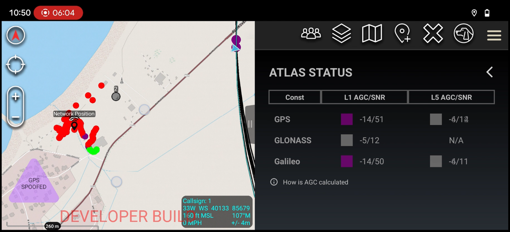
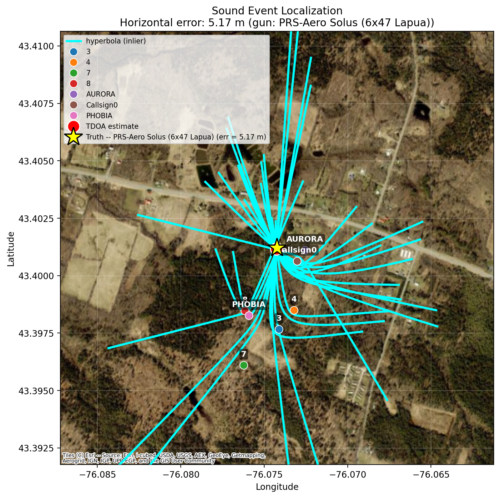

High Integrity PNT and Situational Awareness
Humla Navigation utilizes PhD. GNSS expertise for cutting-edge situational awareness technology
Find our team and see the work in action.
Our Technology
01 / Project↗
02 / Project↗
03 / Project ↗
↗
GPS Anti Jamming/Spoofing in ATAK
See your current GPS status, and plot jamming/spoofing heatmaps

Gunshot Localizations in ATAK
Hear a gunshot? See where it came from on the ATAK map

SIGINT Jammer & Spoofer Localization
Use RF time-difference measurements to locate sources of interference.